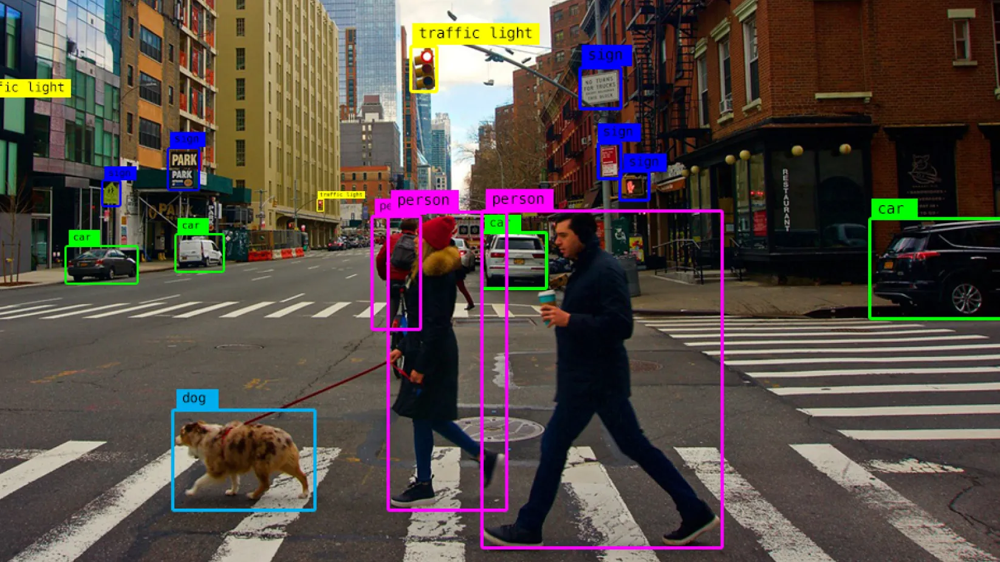
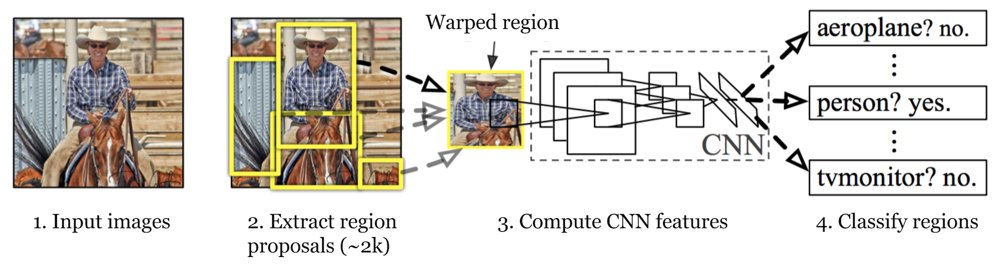
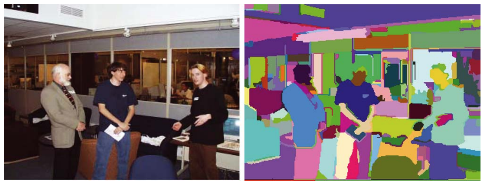
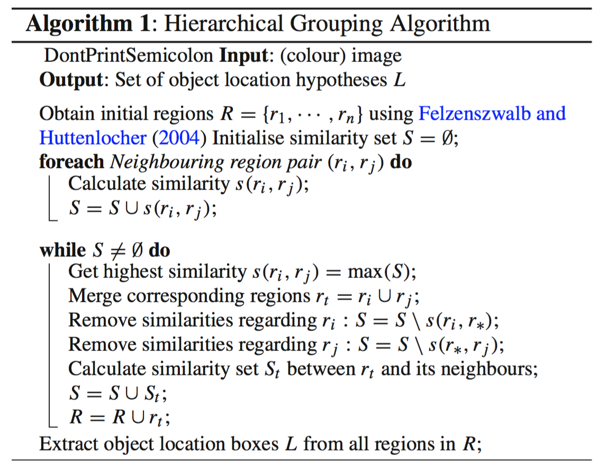
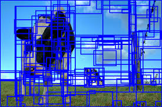
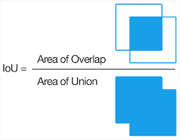
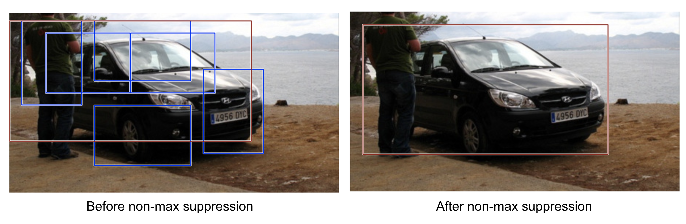
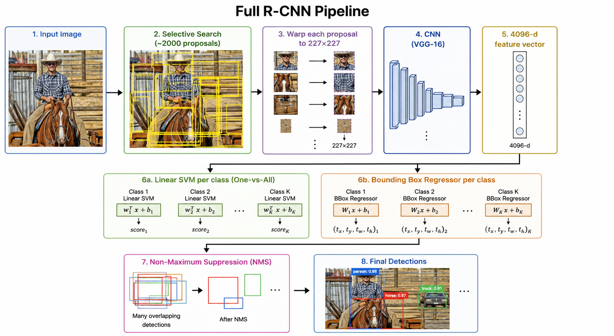

RCNN Family
In this chapter, we'll go through the what, how and why of Region-Based Convolutional Neural Networks (RCNN). Plus we'll also cover Fast, Faster & Mask R-CNN.
Region-Based Convolutional Neural Networks (RCNN)
Previously, we had covered object classification (both in CNNs and ResNet).
\[ f : \mathbb{R}^{H \times W \times 3} \to \mathbb{R}^{C} \quad \text{maps an image to a class probability vector} \]Now, we want to classify multiple objects in an image. This is called object detection.
\[ f : \mathbb{R}^{H \times W \times 3} \to \{(c_i, b_i)\}_{i=1}^{N} \]where,
- \(c_i\): class label for the \(i\)-th object
- \(b_i\): bounding box coordinates for the \(i\)-th object
The bounding box coordinates can be represented as \((x, y, w, h)\), where \((x, y)\) is the top-left corner and \((w, h)\) is the width and height.

RCNN Architecture
RCNN introduces three stages to solve the object detection problem:
- Region Proposal: Generate potential object bounding boxes (~2000).
- Feature Extraction: Extract features from each proposed region (using a pre-trained CNN).
- Classification: Classify each region using a classifier (SVM).

Let's go through each stage thoroughly.
1. Region Proposal via Selective Search
Selective Search is a region proposal method that generates a set of candidate bounding boxes for potential objects in the image.
How does it work?- At initialization, apply Felzenszwalb and Huttenlocher algorithm and retrieve regions \( R = \{r_1, r_2, \dots, r_n\} \) (more details on algorithm below)
-
Use a greedy optimization approach to merge similar regions
- First the similarities between all neighbouring regions are calculated (similarity is calculated based on color, texture, size and shape).
- The two most similar regions are grouped together, and new similarities are calculated between the resulting region and its neighbours.
- This process is repeated until a stopping criterion is met.


The final output of Selective Search is a set of 2000 candidate bounding boxes.

The algo follows a bottom-up procedure. Given \( G = (V, E) \) and edge weights \( w(e) \):
- Sort all edges in ascending order of weight: \( e_1, e_2, \dots, e_m \)
- Initially, each pixel forms its own component, \( S^0 = \{\{v_1\}, \{v_2\}, \dots, \{v_n\}\} \)
-
For \( k = 1,2,\dots,m \):
- Let \( S^k \) denote the segmentation at step \( k \). Take the \( k \)-th edge \( e_k = (v_i, v_j) \).
- If \( v_i \) and \( v_j \) belong to the same component, then \( S^{k+1} = S^k \).
- Otherwise, let \( C_i \) and \( C_j \) be the two components containing \( v_i \) and \( v_j \) respectively in \( S^k \).
- Merge \( C_i \) and \( C_j \) if \[ w(e_k) \leq \min \big( \operatorname{Int}(C_i) + \tau(C_i), \operatorname{Int}(C_j) + \tau(C_j) \big) \] where \( \operatorname{Int}(C) = \max_{e' \in E_C} w(e') \) is the internal difference of component \( C \), and \( E_C \) is the set of edges with both endpoints in \( C \). The function \( \tau(C) = k / |C| \) is a threshold function that controls the degree of merging based on the size of the component.
- Otherwise, do nothing.
2. Labelling Proposals with IoU
Given ~2000 proposals & the ground truth bounding boxes (from the dataset), R-CNN needs to decide which proposals are positive (contain an object) and which are negative (background). The metric for this decision is Intersection over Union (IoU).
For a predicted bounding box \( P \) and a ground truth bounding box \( G \), the IoU is defined as:
\[ \text{IoU} = \frac{|P \cap G|}{|P \cup G|} = \frac{|P \cap G|}{|P| + |G| - |P \cap G|} \]
R-CNN labels a proposal as:
- Positive: if IoU \( > 0.5 \)
- Negative: if IoU \( < 0.3 \)
- Ignored: if IoU is between 0.5 and 0.3 (optional)
3. Feature Extraction with a Pre-trained CNN
Each of the ~2000 proposals is warped to a fixed size of 224 × 224 (VGG-16 architecture is used) and then passed through the pre-trained CNN to extract features (VGG-16).
We extract the features from the fully connected layers of the pre-trained CNN.
\[ \phi(p) \in \mathbb{R}^{4096} \]4. Classification with a Linear SVM
For each object category, a separate linear SVM is trained on the extracted 4096 features.
For class \( c \), the SVM solves:
\[ \min_{w_c, b_c} \quad \frac{1}{2}\|w_c\|^2 + C \sum_{i=1}^{N} \xi_i \] subject to \[ y_i (w_c^T \phi(p_i) + b_c) \ge 1 - \xi_i, \quad \xi_i \ge 0 \]where \( y_i \in \{-1, +1\} \) is the true label for proposal \( p_i \), \( C \) is the regularization parameter, and \( \xi_i \) are slack variables.
The SVM outputs a confidence score \( s_c(p) \) = \( w_c^T \phi(p) + b_c \) for each proposal \( p \).
The original R-CNN paper found that fine-tuning the CNN with a softmax head and directly reading off the softmax scores slightly underperformed the SVM approach. The suspected reason: the CNN is fine-tuned with loose IoU thresholds (IoU > 0.5 as positive), which gives imprecise spatial examples. The SVM is trained with stricter positive/negative criteria, learning a tighter decision boundary.
5. Bounding Box Regression
Given Proposal \( P = (P_x, P_y, P_w, P_h) \) (center co-ordinates, width, height) and Ground Truth \( G = (G_x, G_y, G_w, G_h) \), the regressor is configured to learn scale-invariant transformation between two centers and log-scale transformation between widths and heights. All the transformation functions take as input.
\[\hat{G}_x = P_w \hat{t}_x + P_x, \quad \hat{G}_y = P_h \hat{t}_y + P_y\] \[\hat{G}_w = P_w \exp(\hat{t}_w), \quad \hat{G}_h = P_h \exp(\hat{t}_h)\]
An obvious benefit of applying such transformations is that all the bounding box correction functions, \( d_i(p) \), where \( i \in \{x, y, h, w\} \), can take values in \( (-\infty, +\infty) \).
The targets for them to learn are:
\[ t_x = \frac{G_x - P_x}{P_w}, \quad t_y = \frac{G_y - P_y}{P_h}, \quad \] \[ t_w = \log\left(\frac{G_w}{P_w}\right), \quad t_h = \log\left(\frac{G_h}{P_h}\right) \]A standard regression model can solve the problem by minimizing the SSE loss with regularization:
\[ \mathcal{L}_{\text{reg}} = \sum_{i \in \{x, y, w, h\}} \left( (\hat{t}_i - t_i)^2 + \lambda \|w\|^2 \right) \]6. Non-Maximum Suppression
Algorithm:
- Sort all proposals by confidence score \(s\) in descending order.
- Take the top proposal \(p^*\). Add to output set.
- Remove all remaining proposals \( p_j \) where \( \operatorname{IoU}(p^*, p_j) > \tau \) (e.g., \( \tau = 0.3 \)).
- Repeat step 2

R-CNN Pipeline

Evaluation — Mean Average Precision (mAP)
Object detection models are evaluated using mean Average Precision (mAP).
\[ \text{Precision} = \frac{\text{True Positives}}{\text{True Positives} + \text{False Positives}} \] \[ \text{Recall} = \frac{\text{True Positives}}{\text{True Positives} + \text{False Negatives}} \]For each class, we compute the Average Precision (AP) as the area under the Precision-Recall curve. The mAP is then calculated as the mean of AP across all classes.
\[ \text{AP} = \int_0^1 \text{Precision}(r) \, dr \] \[ \quad\text{mAP} = \frac{1}{C} \sum_{c=1}^{C} \text{AP}_c \]